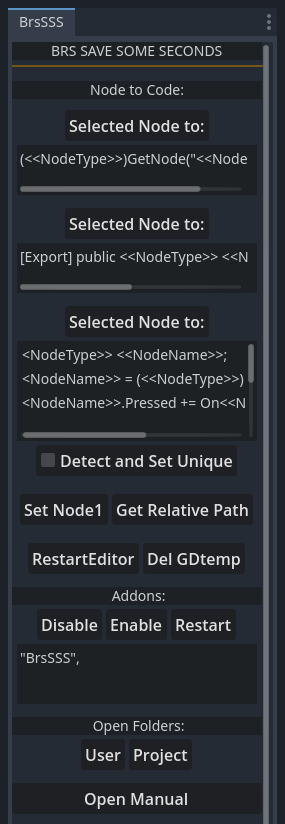
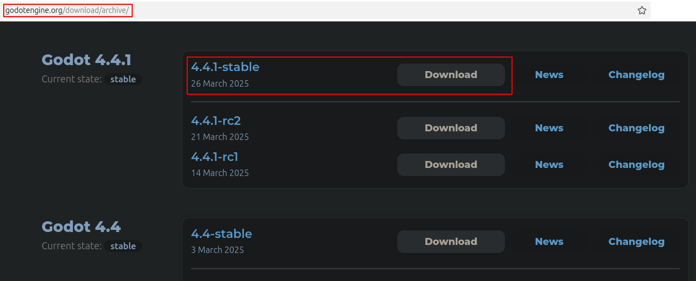
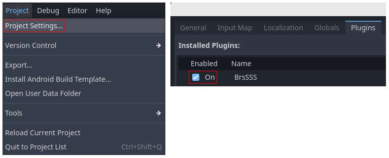
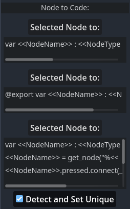
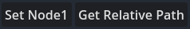
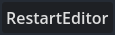
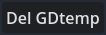
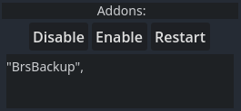
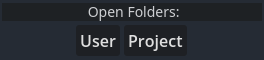
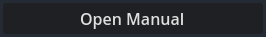

|
 |
Addon OverviewThis addon saves time working with Godots nodes and editors like visual studio code/codium etc. It has a bunch of small tools that make it easier and faster to work with godot.Pre-Requisite Setup:1. You need to use godot 4.4, 4.5 errs and 4.3 is untested: 2. Extract the archive file BrsSSS.zip into your Godot project's folder. 3. Enable the addon in Project - Project Settings - Plugins:  |
       |
Detailed Breakdown:
Node to Code:This feature generates code using the selected node. There are three Selected Node To: buttons, each linked to a corresponding TextEdit field below it.To use this, write your code and use the following placeholders: <<NodeName>> replaces it with the selected node's name. <<NodeType>> replaces it with the selected node's type. <<NodePath>> replaces it with the selected node's path. For example, if you enter: var <<NodeName>> : <<NodeType>> = <<NodePath>>; into one of the TextEdits select a Label node and press Selected Node To something like: it will be converted into: myNode2D : Node2D = SomeContainer/myNode2D; The result is copied to the clipboard, ready to be pasted into your code editor. Tip: You can use both C#, GDScript.
Detect and Set Unique
Restart Editor
Del GDtemp
Open Folders:
Node Buttons Usage:Addon Usage: Saving Time Handling the .NET Disconnect Issue:License:This addon is licensed under the Mozilla Public License 2.0. You are free to use this addon as a tool in your projects. You may use, modify, and incorporate the methods and classes from this addon into your own projects, including commercial projects. However, if you do so, you must provide credit. You may NOT sell, rebrand, or distribute this addon or its parts as a standalone product, whether modified or unmodified, without open-sourcing your modifications under the MPL-2.0 license. For full license details, see https://www.mozilla.org/en-US/MPL/2.0/ |